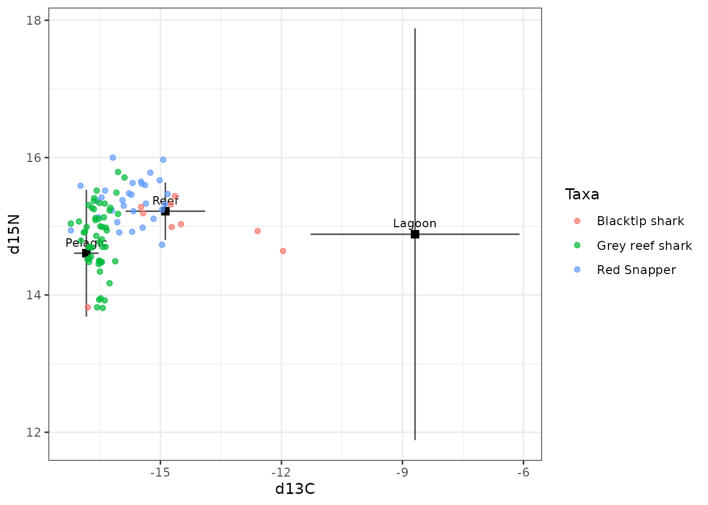
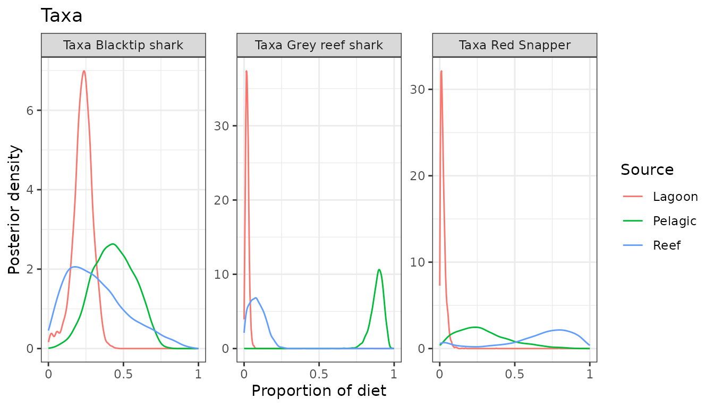
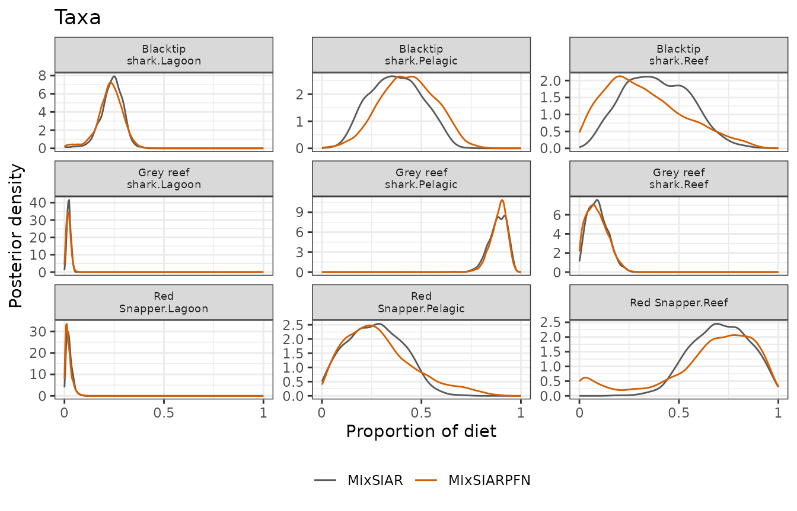
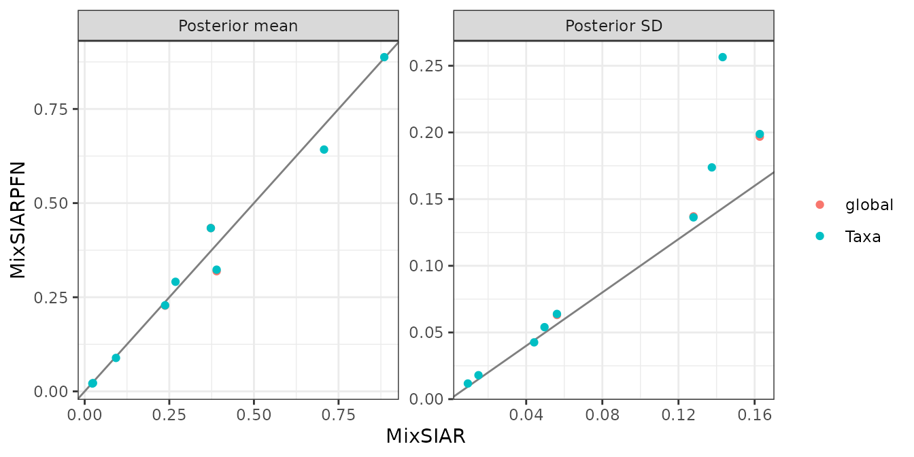

This follows MixSIAR’s Palmyra example script
(mixsiar_script_palmyra.R): consumers of several taxa, two
tracers (δ¹³C and δ¹⁵N) and three sources (lagoon, pelagic and reef food
webs), with taxon as a fixed effect. The source data are raw samples.
Only the fitting call differs from MixSIAR’s script:
run_pfn() in place of write_JAGS_model() and
run_model().
The data
mix <- load_mix_data(
filename = system.file("extdata", "palmyra_consumer.csv", package = "MixSIARPFN"),
iso_names = c("d13C", "d15N"), factors = "Taxa", fac_random = FALSE,
fac_nested = FALSE, cont_effects = NULL)
source <- load_source_data(
filename = system.file("extdata", "palmyra_sources.csv", package = "MixSIARPFN"),
source_factors = NULL, conc_dep = FALSE, data_type = "raw", mix)
#> Raw source data summarised to means, SDs and sample sizes (Lagoon: n = 24; Pelagic: n = 27; Reef: n = 20).
discr <- load_discr_data(
filename = system.file("extdata", "palmyra_discrimination.csv", package = "MixSIARPFN"),
mix)load_source_data() summarises the raw source samples to
each source’s mean, SD and sample size, which is what MixSIARPFN’s
networks use:
source$data
#> Source Meand13C SDd13C Meand15N SDd15N n
#> 1 Lagoon -9.888082 1.7608748 12.78433 1.0750500 24
#> 2 Pelagic -16.835832 0.3042025 14.60792 0.9226739 27
#> 3 Reef -14.877106 0.9848190 15.21950 0.4184614 20There are 92 consumers in 3 taxa (Blacktip shark, Grey reef shark, Red Snapper).
plot_data(mix = mix, source = source, discr = discr)
Fitting the model
Residual * Process error and MixSIAR’s uninformative Dirichlet prior, as in MixSIAR’s script.
time <- system.time(
fit <- run_pfn(mix, source, discr, alpha.prior = 1,
resid_err = TRUE, process_err = TRUE)
)
fit
#> MixSIARPFN fit (Residual * Process error), 3 sources, in 0.5 s
#> Marginal posteriors (no joint draws). Global diet:
#> source mean sd 2.5% 97.5%
#> Lagoon 0.228 0.063 0.076 0.341
#> Pelagic 0.434 0.137 0.171 0.691
#> Reef 0.319 0.197 0.030 0.763
#> Use output_pfn() for every proportion and parameter.Results
out <- output_pfn(fit, mix, source,
output_options = list(summary_save = FALSE, plot_post_save_pdf = FALSE))
knitr::kable(round(summary_table(fit), 3))| Mean | SD | 2.5% | 5% | 25% | 50% | 75% | 95% | 97.5% | |
|---|---|---|---|---|---|---|---|---|---|
| Epsilon.1 | 1.232 | 0.379 | 0.624 | 0.701 | 0.967 | 1.188 | 1.451 | 1.904 | 2.081 |
| Epsilon.2 | 0.494 | 0.183 | 0.246 | 0.273 | 0.375 | 0.468 | 0.582 | 0.798 | 0.885 |
| p.global.Lagoon | 0.228 | 0.063 | 0.076 | 0.116 | 0.193 | 0.232 | 0.268 | 0.322 | 0.341 |
| p.global.Pelagic | 0.434 | 0.137 | 0.171 | 0.211 | 0.336 | 0.432 | 0.534 | 0.658 | 0.691 |
| p.global.Reef | 0.319 | 0.197 | 0.030 | 0.052 | 0.165 | 0.286 | 0.444 | 0.697 | 0.763 |
| p.Blacktip shark.Lagoon | 0.229 | 0.064 | 0.074 | 0.115 | 0.194 | 0.233 | 0.270 | 0.324 | 0.343 |
| p.Blacktip shark.Pelagic | 0.434 | 0.136 | 0.172 | 0.211 | 0.336 | 0.432 | 0.533 | 0.656 | 0.689 |
| p.Blacktip shark.Reef | 0.323 | 0.199 | 0.030 | 0.052 | 0.167 | 0.291 | 0.451 | 0.702 | 0.768 |
| p.Grey reef shark.Lagoon | 0.021 | 0.012 | 0.003 | 0.005 | 0.013 | 0.020 | 0.028 | 0.041 | 0.045 |
| p.Grey reef shark.Pelagic | 0.888 | 0.043 | 0.790 | 0.812 | 0.864 | 0.893 | 0.917 | 0.946 | 0.954 |
| p.Grey reef shark.Reef | 0.089 | 0.054 | 0.007 | 0.012 | 0.046 | 0.084 | 0.125 | 0.184 | 0.204 |
| p.Red Snapper.Lagoon | 0.022 | 0.018 | 0.003 | 0.004 | 0.010 | 0.018 | 0.029 | 0.056 | 0.067 |
| p.Red Snapper.Pelagic | 0.291 | 0.174 | 0.038 | 0.057 | 0.160 | 0.263 | 0.390 | 0.632 | 0.705 |
| p.Red Snapper.Reef | 0.642 | 0.256 | 0.015 | 0.042 | 0.546 | 0.709 | 0.828 | 0.937 | 0.958 |

Comparison with MixSIAR
ref <- mixsiar_reference("palmyra")
ref_raw <- mixsiar_reference("palmyra_raw")
blocks <- "Taxa"MixSIAR 3.1.12 fitted the same model to the same data with 3 chains of 300,000 iterations (burn-in 200,000, MixSIAR’s “long” run), which took 58 minutes (largest Gelman-Rubin diagnostic 1.022). MixSIARPFN took 0.5 seconds, about 7,300 times faster.
Means, SDs, 95% intervals and the Wasserstein-1 distance between the two posteriors (W1: how far, on average, one posterior’s mass has to move to match the other, on the proportion scale):
knitr::kable(data.frame(
quantity = cmp$name,
`MixSIARPFN mean` = round(cmp$pfn_mean, 3), `MixSIAR mean` = round(cmp$mixsiar_mean, 3),
`MixSIARPFN SD` = round(cmp$pfn_sd, 3), `MixSIAR SD` = round(cmp$mixsiar_sd, 3),
`MixSIARPFN 95% CI` = sprintf("%.2f to %.2f", cmp$pfn_q2.5, cmp$pfn_q97.5),
`MixSIAR 95% CI` = sprintf("%.2f to %.2f", cmp$mixsiar_q2.5, cmp$mixsiar_q97.5),
W1 = round(cmp$w1, 3), check.names = FALSE))| quantity | MixSIARPFN mean | MixSIAR mean | MixSIARPFN SD | MixSIAR SD | MixSIARPFN 95% CI | MixSIAR 95% CI | W1 |
|---|---|---|---|---|---|---|---|
| Epsilon.1 | 1.232 | 1.312 | 0.379 | 0.331 | 0.62 to 2.08 | 0.76 to 2.07 | NA |
| Epsilon.2 | 0.494 | 0.495 | 0.183 | 0.137 | 0.25 to 0.89 | 0.28 to 0.81 | NA |
| p.global.Lagoon | 0.228 | 0.238 | 0.063 | 0.056 | 0.08 to 0.34 | 0.11 to 0.33 | 0.011 |
| p.global.Pelagic | 0.434 | 0.373 | 0.137 | 0.128 | 0.17 to 0.69 | 0.15 to 0.61 | 0.061 |
| p.global.Reef | 0.319 | 0.390 | 0.197 | 0.163 | 0.03 to 0.76 | 0.11 to 0.71 | 0.078 |
| p.Blacktip shark.Lagoon | 0.229 | 0.238 | 0.064 | 0.056 | 0.07 to 0.34 | 0.11 to 0.33 | 0.011 |
| p.Blacktip shark.Pelagic | 0.434 | 0.373 | 0.136 | 0.128 | 0.17 to 0.69 | 0.15 to 0.61 | 0.061 |
| p.Blacktip shark.Reef | 0.323 | 0.390 | 0.199 | 0.163 | 0.03 to 0.77 | 0.11 to 0.71 | 0.075 |
| p.Grey reef shark.Lagoon | 0.021 | 0.023 | 0.012 | 0.009 | 0.00 to 0.05 | 0.01 to 0.04 | 0.002 |
| p.Grey reef shark.Pelagic | 0.888 | 0.885 | 0.043 | 0.044 | 0.79 to 0.95 | 0.79 to 0.95 | 0.005 |
| p.Grey reef shark.Reef | 0.089 | 0.092 | 0.054 | 0.050 | 0.01 to 0.20 | 0.01 to 0.20 | 0.005 |
| p.Red Snapper.Lagoon | 0.022 | 0.025 | 0.018 | 0.015 | 0.00 to 0.07 | 0.00 to 0.06 | 0.004 |
| p.Red Snapper.Pelagic | 0.291 | 0.268 | 0.174 | 0.138 | 0.04 to 0.71 | 0.03 to 0.53 | 0.025 |
| p.Red Snapper.Reef | 0.642 | 0.707 | 0.256 | 0.143 | 0.01 to 0.96 | 0.44 to 0.96 | 0.072 |
for (b in blocks) print(plot_compare(fit, ref$draws, block = b))
plot_compare(fit, ref$draws, type = "means")
What this shows. MixSIARPFN’s diet proportions differ from MixSIAR’s by 0.031 on average (MixSIAR’s posterior SDs are about 0.09), the mean W1 between the two posteriors is 0.034, and the median ratio of their SDs is 1.17. The largest difference in a posterior mean is for p.global.Reef (0.319 against 0.390).
The source data here are raw samples, which MixSIARPFN summarises to each source’s mean, SD and sample size. MixSIAR’s own example fits the raw samples instead, estimating each source’s mean and variance in the model. That MixSIAR fit (115 minutes, largest Gelman-Rubin diagnostic 1.012) and MixSIAR’s fit to the summaries differ by 0.095 in posterior means on average. The comparison above is like for like: both methods fitted the same summaries.